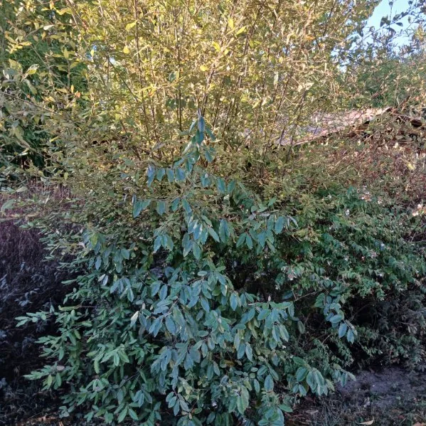
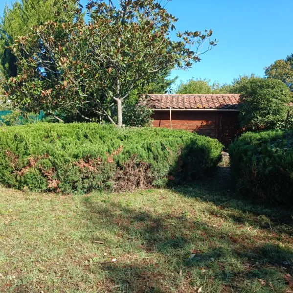
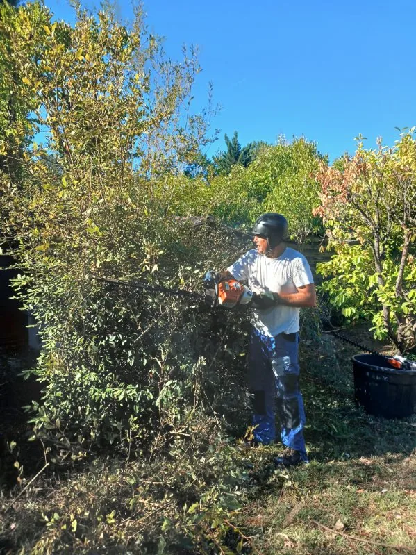
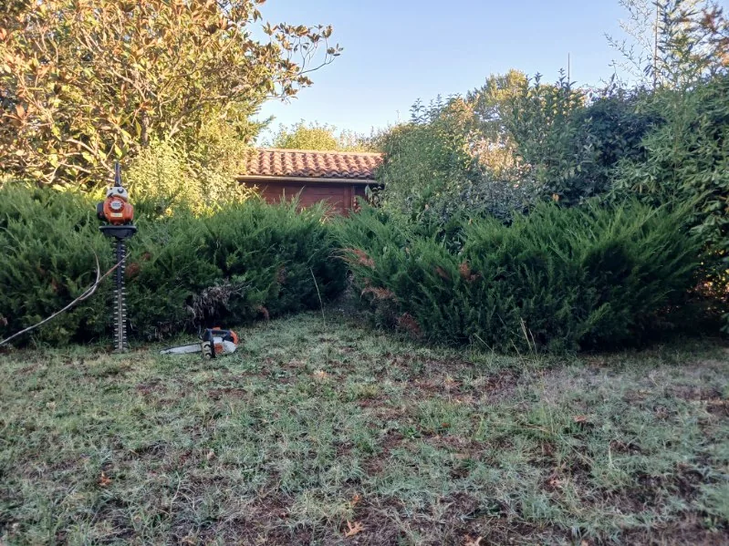

Un jardin rendu à ses propriétaires
Les massifs avaient pris tout l'espace et le cabanon de fond de jardin disparaissait derrière eux. Volumes rabattus, haies reprises, sol dégagé, en une demi-journée.
Le cabanon a réapparu
Sur la première vue, on devine à peine le toit derrière le feuillage. Sur la seconde, il est dégagé et le fond du jardin se voit d'un bout à l'autre.

Avant
AprèsCe qui a été fait
- Commune, Mérignac, où l'entreprise est installée
- Jardin de particulier laissé sans entretien
- Motif, des massifs qui avaient pris tout l'espace
- Volumes rabattus, haies reprises, sol dégagé
- Durée du chantier, une demi-journée
- Période [[À CONFIRMER : mois et année de l'intervention à Mérignac]]
- Sort des coupes [[À CONFIRMER : coupes broyées sur place ou emportées]]
On ne commence jamais par la tonte
Sur un jardin laissé plusieurs saisons, l'ordre des opérations décide du temps passé. On dégage d'abord les accès, pour circuler et pour sortir les coupes. Sans cela, chaque brouettée devient un parcours.
Viennent ensuite les volumes. Les massifs et les haies sont rabattus, ce qui rend la lumière au sol et fait apparaître ce qui était caché dessous. C'est à ce moment qu'on voit l'état réel du terrain.
Le sol se traite en dernier. Tondre avant d'avoir coupé, c'est tondre deux fois, puisque tout le feuillage rabattu retombe sur l'herbe.
Un mot sur ce qui se garde. Un massif envahi n'est pas perdu, il se rabat et repart de la souche. Ce qui ne se rattrape pas, c'est un sujet mort ou déchaussé, et une haie dont le pied est nu sur toute sa longueur. La distinction se fait sur place, avant de sortir un outil.


Ce que l'on nous demande sur les jardins à reprendre
Presque toujours. Un massif envahi se rabat et repart de la souche, une haie épaissie se reprend en deux ou trois saisons. Ce qui ne se rattrape pas, c'est un sujet mort ou déchaussé, et une haie dont le pied est devenu nu sur toute sa longueur. Le reste se récupère.
Par dégager les accès, pour pouvoir circuler et sortir les coupes. Viennent ensuite les volumes, massifs et haies, qui libèrent la lumière. Le sol se traite en dernier, une fois qu'on voit où l'on met les pieds. Commencer par tondre est la meilleure façon de tondre deux fois.
Cela dépend de la surface, du retard accumulé, de la place pour manœuvrer et du sort des coupes. Sur ce chantier, une demi-journée a suffi. Un terrain fermé par les ronces depuis plusieurs années demande davantage, et parfois un engin.